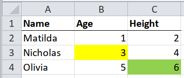

2.4 Meaningfully formatted cells

If single cells are highlighted, rather than whole rows, then the highlights probably indicate something about the column rather than the row. For example, a highlighted cell in a column called “age” of a table of medical patients, might mean “the age of this patient is uncertain”.
One way to deal with this is to create a new column in the final table for each
column in the original that has any highlighted cells. For example, if
highlighted cells mean “this value is uncertain”, and some cells in the age
and height columns are highlighted, then you could create two new columns:
uncertain_age, and uncertain_height, by following the procedure of
meaningfully formatted rows for each column age and
height.
# Step 1: import the table taking only cell values and ignoring the formatting
path <- system.file("extdata", "worked-examples.xlsx", package = "unpivotr")
x <- read_excel(path, sheet = "annotations")
# Step 2: import one column of the table, taking only the formatting and not the
# cell values
# `formats` is a pallette of fill colours that can be indexed by the
# `local_format_id` of a given cell to get the fill colour of that cell
fill_colours <- xlsx_formats(path)$local$fill$patternFill$fgColor$rgb
# Import all the cells, filter out the header row, filter for the first column,
# and create new columns `something_fill` of the fill colours, by looking up the
# local_format_id of each cell in the `formats` pallette.
fills <-
xlsx_cells(path, sheet = "annotations") %>%
dplyr::filter(row >= 2, col >= 2) %>% # Omit the header row and name column
mutate(fill_colour = fill_colours[local_format_id]) %>%
select(row, col, fill_colour) %>%
spread(col, fill_colour) %>%
select(-row) %>%
set_names(paste0(colnames(x)[-1], "_fill"))
fills## # A tibble: 3 x 2
## Age_fill Height_fill
## <chr> <chr>
## 1 <NA> <NA>
## 2 FFFFFF00 <NA>
## 3 <NA> FF92D050## # A tibble: 3 x 5
## Name Age Height Age_fill Height_fill
## <chr> <dbl> <dbl> <chr> <chr>
## 1 Matilda 1 2 <NA> <NA>
## 2 Nicholas 3 4 FFFFFF00 <NA>
## 3 Olivia 5 6 <NA> FF92D050Here’s the same thing, but using only tidyxl and unpivotr
fill_colours <- xlsx_formats(path)$local$fill$patternFill$fgColor$rgb
cells <-
xlsx_cells(path, sheet = "annotations") %>%
mutate(fill_colour = fill_colours[local_format_id]) %>%
select(row, col, data_type, character, numeric, fill_colour)
cells## # A tibble: 12 x 6
## row col data_type character numeric fill_colour
## <int> <int> <chr> <chr> <dbl> <chr>
## 1 1 1 character Name NA <NA>
## 2 1 2 character Age NA <NA>
## 3 1 3 character Height NA <NA>
## 4 2 1 character Matilda NA <NA>
## 5 2 2 numeric <NA> 1 <NA>
## 6 2 3 numeric <NA> 2 <NA>
## 7 3 1 character Nicholas NA <NA>
## 8 3 2 numeric <NA> 3 FFFFFF00
## 9 3 3 numeric <NA> 4 <NA>
## 10 4 1 character Olivia NA <NA>
## 11 4 2 numeric <NA> 5 <NA>
## 12 4 3 numeric <NA> 6 FF92D050values <-
cells %>%
select(-fill_colour) %>%
behead("N", header) %>%
select(-col) %>%
spatter(header)
values## # A tibble: 3 x 4
## row Age Height Name
## <int> <dbl> <dbl> <chr>
## 1 2 1 2 Matilda
## 2 3 3 4 Nicholas
## 3 4 5 6 Oliviafills <-
cells %>%
behead("N", header) %>%
mutate(header = paste0(header, "_fill")) %>%
select(row, header, fill_colour) %>%
spread(header, fill_colour)
fills## # A tibble: 3 x 4
## row Age_fill Height_fill Name_fill
## <int> <chr> <chr> <chr>
## 1 2 <NA> <NA> <NA>
## 2 3 FFFFFF00 <NA> <NA>
## 3 4 <NA> FF92D050 <NA>## # A tibble: 3 x 6
## Age Height Name Age_fill Height_fill Name_fill
## <dbl> <dbl> <chr> <chr> <chr> <chr>
## 1 1 2 Matilda <NA> <NA> <NA>
## 2 3 4 Nicholas FFFFFF00 <NA> <NA>
## 3 5 6 Olivia <NA> FF92D050 <NA>Another way would be to make the table what I call “extra-tidy”. If it is tidy,
then each row is an observation, and each column is a variable. To make it
“extra-tidy”, you gather() the variables so that each row is one observation
of one variable. This works best when every variable has the same data type,
otherwise the values will be coerced, probably to a character.
## # A tibble: 3 x 3
## Name Age Height
## <chr> <dbl> <dbl>
## 1 Matilda 1 2
## 2 Nicholas 3 4
## 3 Olivia 5 6# Extra-tidy
extra_tidy <-
x %>%
gather(variable, value, -Name) %>%
arrange(Name, variable)
extra_tidy## # A tibble: 6 x 3
## Name variable value
## <chr> <chr> <dbl>
## 1 Matilda Age 1
## 2 Matilda Height 2
## 3 Nicholas Age 3
## 4 Nicholas Height 4
## 5 Olivia Age 5
## 6 Olivia Height 6With an extra-tidy dataset, the formatting can now be appended to the values of individual variables, rather than to whole observations.
# Extra-tidy, with row and column numbers of the original variables
extra_tidy <-
read_excel(path, sheet = "annotations") %>%
mutate(row = row_number() + 1L) %>%
gather(variable, value, -row, -Name) %>%
group_by(row) %>%
mutate(col = row_number() + 1L) %>%
ungroup() %>%
select(row, col, Name, variable, value) %>%
arrange(row, col)
extra_tidy## # A tibble: 6 x 5
## row col Name variable value
## <int> <int> <chr> <chr> <dbl>
## 1 2 2 Matilda Age 1
## 2 2 3 Matilda Height 2
## 3 3 2 Nicholas Age 3
## 4 3 3 Nicholas Height 4
## 5 4 2 Olivia Age 5
## 6 4 3 Olivia Height 6# `formats` is a pallette of fill colours that can be indexed by the
# `local_format_id` of a given cell to get the fill colour of that cell
fill_colours <- xlsx_formats(path)$local$fill$patternFill$fgColor$rgb
# Import all the cells, filter out the header row, filter for the first column,
# and create a new column `uncertain` based on the fill colours, by looking up
# the local_format_id of each cell in the `formats` pallette.
fills <-
xlsx_cells(path, sheet = "annotations") %>%
dplyr::filter(row >= 2, col >= 2) %>% # Omit the header row and name column
mutate(fill_colour = fill_colours[local_format_id]) %>%
select(row, col, fill_colour)
fills## # A tibble: 6 x 3
## row col fill_colour
## <int> <int> <chr>
## 1 2 2 <NA>
## 2 2 3 <NA>
## 3 3 2 FFFFFF00
## 4 3 3 <NA>
## 5 4 2 <NA>
## 6 4 3 FF92D050# Step 3: append the `fill` column to the rest of the data
left_join(extra_tidy, fills, by = c("row", "col"))## # A tibble: 6 x 6
## row col Name variable value fill_colour
## <int> <int> <chr> <chr> <dbl> <chr>
## 1 2 2 Matilda Age 1 <NA>
## 2 2 3 Matilda Height 2 <NA>
## 3 3 2 Nicholas Age 3 FFFFFF00
## 4 3 3 Nicholas Height 4 <NA>
## 5 4 2 Olivia Age 5 <NA>
## 6 4 3 Olivia Height 6 FF92D050Here’s the same extra-tidy version, but using only tidyxl and unpivotr.
fill_colours <- xlsx_formats(path)$local$fill$patternFill$fgColor$rgb
xlsx_cells(path, sheet = "annotations") %>%
mutate(fill_colour = fill_colours[local_format_id]) %>%
select(row, col, data_type, character, numeric, fill_colour) %>%
behead("W", Name) %>%
behead("N", variable) %>%
select(-data_type, -character, value = numeric)## # A tibble: 6 x 6
## row col value fill_colour Name variable
## <int> <int> <dbl> <chr> <chr> <chr>
## 1 2 2 1 <NA> Matilda Age
## 2 2 3 2 <NA> Matilda Height
## 3 3 2 3 FFFFFF00 Nicholas Age
## 4 3 3 4 <NA> Nicholas Height
## 5 4 2 5 <NA> Olivia Age
## 6 4 3 6 FF92D050 Olivia Height